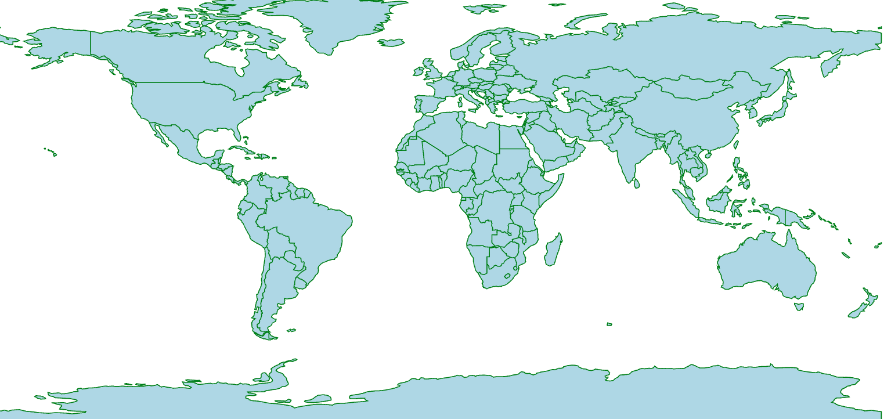

World Maps in BRIDGES
How does the Map API work BRIDGES?
World maps in BRIDGES are retrieved from GeoJSON descriptions of the map geometry. The current interface permits World maps to be colored by country. The color can reflect any user chosen attibute, such as population, sales, crime rates, etc. and is dependent on the data being mapped to the state.
At this point, states or divisions within the country is not supported as each country follows its own format
Like US Maps, world maps can be a background for other BRIDGES data structures. For instance, you can image graph problems being solved as a function of the cities (Minimum Spanning Tree, Traveling Salesman Problem, etc.) in a particular country, or plot earthquakes or or other data points in different countries
It is also possible to specify the countries that you are interested in so that only those countries will be drawn.
In this tutorial, we will illustrate the basic capabilities of
BRIDGES World Maps that will be helpful in building map based assignments.

This tutorial gives an introduction to the use of world maps in BRIDGES.
See also
1. Getting Started: Build a World Map with State boundaries
In the first part of the tutorial, we will create a World map of all states showing each country's boundary. The map uses a default color for each country's boundary and a default fill color for each country.
If you follow the URL given to you when the application runs, it will get to the Bridges webpage that shows your output. You do not need to be logged into your BRIDGES account to see the output. If you are logged into your account, the output will show up in your gallery.
2. Drawing World Map with selected countries
The map you created in the first part had all the countries drawn by default Here will specify a set of countries to be drawn, by providing a list of their names. We will also illustrate how to assignment visul attributes to each of them (which would be useful when we want to map a data value to each country by an appropriate color)
In the following exmaple, we plot several cities in different countries
Check out the links to the classes (listed above) that supports these attributes and also details the possible colors and shapes you can use and how to specify them.
Here is the code that generated the map output with a set of chosen countries
3. Advanced Features: Overlaying city locations on a World Map.
In the third part of the tutorial, we show some advanced and customizable features with maps. When we draw a world map, we might want to plot cities or other landmarks. Here we will use BRIDGES Graph vertices to do so. But remember, these locations (or any primitive) must be provided in lat/long coordinates, which is the coordinate system for the world map's equirectangular projection.
4. Overlaying a Data Structure on a Worl Map Using Bridges Shape Collection Symbols.
This tutorial is similar to the previous tutorial, except that we can also use BRIDGES Shape Collecion Symbols to display locations and other primitives on a world map. This provides a richer set of primitives of various shapes and sizes to make the visualization more informative. All locations are still provided in lat/long coordinates.
In the following exmaple, we plot several cities in different countries
Well done! You’ve just created your first Bridges based Map! Congrats on completing this tutorial
Going Further
Check Bridges assignment page for map based assignments